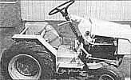
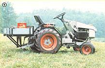
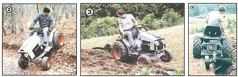
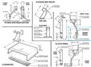
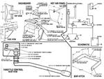
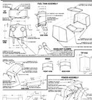
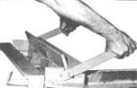
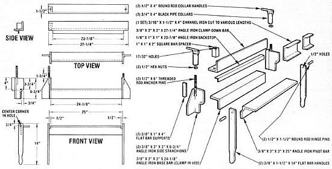

In the last issue of this publication, we described a homemade tractor that one of our research staffers designed and built for less than half of what it would have cost him to buy an equivalent factory-made piece of equipment (see MOTHER NO. 76, page 122). That first installment also detailed the fabrication of the vehicle's frame and drive train, as well as the selection of the engine and running gear.
This article, then, will go on to describe how we cut and formed the sheet-metal body parts (with the help of a special bending brake that we'll show you how to build) ... hooked up the electrical, brake, and control systems . . . and installed a versatile, sturdy bar hitch to the rear of the tractor
GET IT TOGETHER
Nearly all of the body components used in this project consist of precut sections of 14-gauge sheet metal, which were bent to the proper shape by means of the made-from-scrap manual brake detailed in the accompanying sidebar. By referring to our illustrations to determine the appropriate dimensions and crease points, you should be able to duplicate our results in your own workshop . . . or - if you've chosen to modify our tractor's design by using a different powerplant, wheel size, frame length, or whatever - to use our plans as guidelines for fabricating sheet-metal parts to suit your own needs.
The Volkswagen steering box mounts to a 2" square tubular steel adapter on the floorboard (its column, in turn, is fastened to an extension attached to the dash panel), and the standard pitman arm has been modified - using a 1/2" X 1-1/4" X 9" flat bar bent in an offset - so it can connect the box to the drag link described in issue 76.
The brake and clutch pedals are made from sections of 1/4" X 1-1/4" flat bar, cut and bent to shape, and 1/4" X 3" X 5" plates serve as foot pads for these levers. An 8"-long section of 7/16" rod - with a 7/ 16" X 2" bolt welded to one end and a piece of 3/4" rod fused to the other - provides a fine throttle control unit . . . once a 1/8" X 1" X 2-1/4" flat bar is fastened to the end of the pivot bolt to regulate the accelerator cable.
Our tractor's dashboard (and its trim) was fashioned from sheet-metal panels, and was designed to bolt directly to existing holes in the Kohler KT17 engine. Of course, if you're using any powerplant other than this horizontal twin, you'll likely have to cut panels to fit your particular engine ( or simply make a small frame to support the forward end of the dash unit).
By the same token, our tractor's fuel tank is nothing more than a metal box contoured to provide compatibility with the Kohler's low profile. The fill neck was salvaged from a junked pickup truck, and the outlet is a 1/8" drain cock. Short lengths of 4" E.M.T., welded to the front of the tank, serve as headlight buckets (two simple clamps - made from this same conduit and a pair of sheet-metal rings - hold the lamps in place), and 1-1/4" sections of 11-gauge square tubular steel are used to provide a protective channel for the wiring and support the tank itself.
All of the remaining body parts - including the hood and the rear fenders - can be formed using the sheet metal brake. The engine cover incorporates a small scooplike bulge that contains the fuel filler cap, and the fenders are braced with 1/8" angle iron sections (in 3/4", 1", and 1-1/2" dimensions) that also serve to support the battery, the hinged seat panel, and the reservoir for the optional hydraulic system. The seat itself (in our case, it's a $45 Massey-Ferguson replacement unit . . . but you could likely fabricate, or salvage, one for less) fastens to a cross-drilled 13" length of 3/16" X 1-1/2" X 4" channel iron, and a front cover - measuring 17-3/4" X 18-3/4" - bolts across the face of the fenders to shield the components between them. (We also installed a panel, beneath the dashboard and behind the engine, to keep the powerplant's cooling air from blowing onto the driver during the warm months . . . the plate can be removed to provide winter heating.)
Finally, the brake lines and electrical wiring can be installed. If you're a true-blue scrounger, you might be able to make use of the existing lines from the junked VW that supplied many of the parts for this project . . . if not, simply buy a 60" length of 3/16" brake tubing from the auto parts store. In either case, you should install a tee between the master cylinder (which is fastened to the support bracket on the right side of the frame) and the right and left wheel cylinders. You'll have to obtain (buy it only if you can't borrow one) a double flaring tool to finish the ends of any brake lines you cut.
Hooking up the electrical components should be no problem if you follow the schematic shown. We used 14-gauge wire throughout (with the exception of the battery cables, of course), and - since the ignition coil, starter, and alternator came with our engine - we only had to purchase the battery, headlamps, ignition switch, solenoid, ammeter, and fuse holder to make the system complete.
MAKE IT SUIT YOUR NEEDS
At this point, there are several decisions that you'll have to make before completing your tractor. If you plan to use it as a light-duty towing vehicle for a trailer or a simple gang mower, you can just build the removable bar hitch detailed in this article, paint your "baby" up, add oil and brake fluid, and cut loose.
However, should you want to go the whole nine yards and equip your workhorse with such "big tractor" features as a hydraulically operated three-point hitch (category 0) and a power-takeoff shaft, that's entirely possible, too - if you're prepared to lay out some additional cash - since this "Little Hercules" is more than stout enough to take the strain. (In fact, while working the garden shown in the color photographs here, we had to load the rear tires with an antifreeze solution for better traction ... and neither the engine nor the drive train nor the frame showed any signs of fatigue under these conditions.)
Unfortunately, space limitations make it impossible for us to present the construction of these optional features, this time around, in enough detail to be sure of leading you through the project. But keep an eye out for MOTHER NO. 78, because we'll have more on MOM's mini-tractor then . . . and we'll be better able to report on how well our tractor-and-implement team performed "in the field".
Illustration Assemblies (Click on image to enlarge)
BRAKE EVEN
In order to make "clean" creases on the sheet-metal parts used for this project (or for any other undertaking that makes use of bent panels, for that matter), a substantial bending brake is an absolute necessity. Though a professional's brake could run into thousands of dollars, it's possible to put together a close copy of a heavy-duty manual metal-bender - mostly from scrap pieces of angle iron - for only a few bucks.
The tool shown here is the unit we actually used to form parts of the tractor, and that experience proved that it's fully capable of bending a 24 "-wide piece of 14-gauge mildsteel sheet . . . and, of course, would make short work of anything smaller or lighter than that. To build your own, just collect the materials noted below, cut them to the sizes indicated, and assemble them according to our illustration.
After all the holes have been drilled, the handles should be welded to the ends of the pivot bar . . . the backstop welded to the clamp-down bar (at a point 1-1/2 inches from its corner) . . . and the side stanchions, in turn, welded to the base bar in the same manner. The 1/2" X 6" anchor pins are merely welded to the upper corners of the stanchions (along with some exterior supports), and 1/2" nuts - fastened to handled 3/4" black pipe collars - thread down on the pins to apply pressure against the clamp-down bar. With this done, hinge pins can be installed and tacked in place.
Because we designed this brake for boxmaking as well as for simple sheet bending, we didn't want the clamp-down bar to tighten directly against the base. Instead, we cut a section of 3/16" X 1-1/2" X 4" channel iron to various lengths (up to 23-7/8" and used those pieces as progressively sized (and interchangeable) hold-down clamps . . . which fit between the clamp-down bar and the base, and rest against the backstop at the rear. These channel iron clamps press against the work and hold it firmly while the handyperson operates the pivot bar handle.
EDITOR'S NOTE: Because some readers might want particular details concerning this project's construction that cannot possibly be covered in a series of magazine articles, MOTHER's staffers are working on step-by-step building plans, which will include every phase of our tractor's fabrication. Information about how to order your set will be provided in next issue's article on MOTHER's mini-tractor.
|
 STAFF PHOTOS MOTHER's tractor looks so much like a store-bought one that folks have trouble believing it's homemade. but don't let its sleek design fool you: It can carry odds and ends in a hitch-mounted tray (watch for construction details in an |
 STAFF PHOTOS
|
 STAFF PHOTOS PITMAN ARM MODIFICATION, STEERING BOX MOUNT, BRAKE PEDAL, CLUTCH PEDAL, FLOORBOARD |
||
|
 DASHBOARD, HOT AIR PANEL, THROTTLE CONTROL, SCHEMATIC, BAR HITCH |
 FUEL TANK ASSEMBLY, HOOD, FENDER ASSEMBLY |
 |
||
|
 |
 |
|